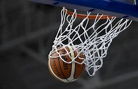
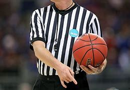
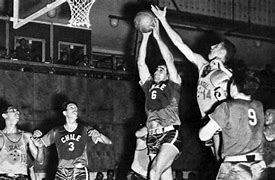

Basquete
O basquetebol ou basquete é um esporte coletivo jogado por duas equipes, que têm o objetivo de fazer pontos ao acertar a bola na cesta do adversário, o alvo fixo na quadra. A prática é caracterizada por ser dinâmica que envolve diferentes capacidades físicas, como a agilidade e a coordenação motora.
O esporte é um dos mais populares do mundo, praticado atualmente por mais de 300 milhões de pessoas, nos mais de 170 países filiados à Federação Internacional de Basquetebol (Fiba).

Regras
• A bola pode ser arremessada em qualquer direção com uma ou com ambas as mãos;
• A bola pode ser tapeada para qualquer direção com uma ou com ambas as mãos (nunca usando os punhos);
• Um jogador não pode correr com a bola. O jogador deve arremessá-la do ponto onde pegá-la. Exceção será feita ao jogador que receba a bola quando estiver correndo a uma boa velocidade;
• A bola deve ser segura nas mãos ou entre as mãos. Os braços ou corpo não podem ser usados para tal propósito;
• Não será permitido sob hipótese alguma puxar, empurrar, segurar ou derrubar um adversário. A primeira infração desta regra contará como uma falta, a segunda desqualificará o jogador até que nova cesta seja convertida e, se houver intenção evidente de machucar o jogador pelo resto do jogo, não será permitida a substituição do infrator;
• Uma falta consiste em bater na bola com o punho ou numa violação das regras 3, 4 e 5;
• Se um dos lados fizer três faltas consecutivas, será marcado um ponto a mais para o adversário (Consecutivo significa sem que o adversário faça falta neste intervalo entre faltas);
• Um ponto é marcado quando a bola é arremessada ou tapeada para dentro da cesta e lá permanece, não sendo permitido que nenhum defensor toque na cesta. Se a bola estiver na borda e um adversário move a cesta, o ponto será marcado para o lado que arremessou;
• Quando a bola sai da quadra, deve ser jogada de volta à quadra pelo jogador que primeiro a tocou. Em caso de disputa, o fiscal deve jogá-la diretamente de volta à quadra. O arremesso da bola de volta à quadra é permitido no tempo máximo de 5 segundos. Se demorar mais do que isto, a bola passará para o adversário. Se algum dos lados insistir em retardar o jogo, o fiscal poderá marcar uma falta contra ele;
• O fiscal deve ser o juiz dos jogadores e deverá observar as faltas e avisar ao árbitro quando três faltas consecutivas forem marcadas. Ele deve ter o poder de desqualificar jogadores, de acordo com a regra 5;
• O árbitro deve ser o juiz da bola e deve decidir quando a bola está em jogo, a que lado pertence sua posse e deve controlar o tempo. Deve decidir quando um ponto foi marcado e controlar os pontos já marcados, além dos poderes normalmente utilizados por um árbitro;
• O tempo de jogo deve ser de dois meio-tempos de 15 minutos cada, com 5 minutos de descanso entre eles;
• A equipe que marcar mais pontos dentro deste tempo será declarada vencedora. Em caso de empate, o jogo pode, mediante acordo entre os capitães, ser continuado até que outro ponto seja marcado.

História do Basquete
O basquete tem suas origens nos Estados Unidos, no final do século XIX. Em 1891, o professor de educação física James Naismith desenvolveu o esporte como uma atividade de inverno para seus alunos na International YMCA Training School, em Massachusetts. Ele fixou cestas de pêssego em extremidades opostas do ginásio e criou 13 regras simples para o jogo.
O basquete rapidamente se popularizou e se espalhou pelo mundo, com as primeiras regras sendo publicadas em 1892. Em 1893, foi realizado o primeiro jogo público de basquete na cidade de Springfield, Massachusetts. A primeira associação de basquete, a National Basketball League (NBL), foi fundada em 1898, e em 1949 foi formada a National Basketball Association (NBA), que se tornou a principal liga profissional de basquete do mundo.
O basquete feminino também teve um papel importante em sua história, com a formação da Women's National Basketball Association (WNBA) em 1996 nos Estados Unidos. A modalidade feminina cresceu em popularidade e prestígio, contribuindo para o desenvolvimento global do esporte.
O basquete tornou-se um dos esportes mais populares e amplamente praticados em todo o mundo, com milhões de jogadores e fãs. Além das ligas profissionais, como a NBA e a WNBA, o basquete é disputado em níveis amador e escolar em muitos países. O esporte também se tornou uma atração internacional, com a participação de equipes nacionais em competições como os Jogos Olímpicos e o Campeonato Mundial de Basquete, promovendo a camaradagem e a competição em todo o mundo.
